Set up the Humperdink browser add-ons
Small add-ons for Chrome and Microsoft Edge that bring Hot Task into Humperdink, speed up new loans, properties and loan docs, and collect sale comps from Redfin and Zillow. Setup takes about five minutes, once. After that they update themselves.
Install Violentmonkey
Violentmonkey is the free browser extension that runs the add-ons. These steps are written for Chrome. Edge works the same way, and the differences are called out below.
- Open Violentmonkey in the Chrome Web Store and click Add to Chrome, then Add extension.
- Click the puzzle piece icon at the top right of Chrome and click the pin next to Violentmonkey, so its icon stays in your toolbar.
Turn on Allow User Scripts
Chrome and Edge block the add-ons until you switch this on. Skip it and nothing will show up.
- Right-click the Violentmonkey icon in your toolbar and choose Manage extension.
- Find Allow User Scripts and switch it on.
chrome://extensions
edge://extensions
Install the add-ons
Click each Install button below. A Violentmonkey tab opens showing the add-on. Click Install there too, then close that tab if it doesn't close by itself. Each add-on has a How to use link under it with the steps.
Hot Task Panel
Puts a round Hot Task button in the bottom right of every Humperdink page. Click it to open Hot Task over the page, without leaving Humperdink. On a loan, it also adds an Export to HT button that sends the loan to a new LOI Check.
How to use
Click the round Hot Task button in the bottom right of any Humperdink page to open Hot Task on top of the page. Click it again to tuck it away.
Export to HT: starting an LOI Check from a loan
Export to HT starts a new LOI Check in Hot Task with the loan's name, its Humperdink link and its property addresses already in it. It can open Hot Task in the Panel, on top of Humperdink, or in Teams. Teams takes one extra step, so the two are written out separately below.
- On a loan in Humperdink, click Export to HT in the Loan Terms header. If it looks faded, the loan's properties are still loading. Give it a second.
- The first time, it asks where to open: Panel or Teams. It remembers your answer, and you can change it any time in the Panel's settings menu.
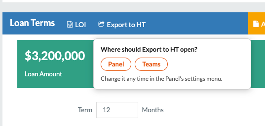
If you chose Panel
Hot Task opens over the Humperdink page on a new LOI Check, with the Folder Name, the Humperdink link and the property addresses already filled in. Skip to Finish the LOI Check below.
If you chose Teams
- The first time, your browser asks whether to open Microsoft Teams. Tick Always allow and click Open, and it won't ask again.
- Teams opens Hot Task on a new LOI Check. The form is empty. That's expected.
- Press Ctrl+V. The Folder Name, the Humperdink link and the property addresses fill in. If nothing happens, click any box on the form and press Ctrl+V again.
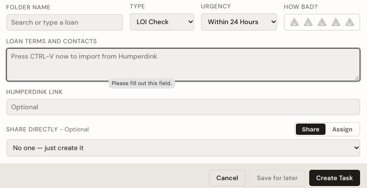
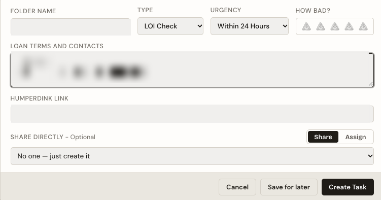
Finish the LOI Check
- Fill in the terms yourself, copied straight from the loan committee approval email thread, and cross reference them against the property profile document. Add the correct borrower and broker names while you're there. The export doesn't bring any of it, on purpose.
- Check it over, fill in anything else, and click Create. Nothing is filed until you do.
It copies the loan name, the Humperdink link, and the address of every property on the loan. It does not copy the loan terms, the borrower or the broker. That's deliberate: a note that arrives with the rate and the fee already filled in gets skimmed instead of checked, and checking them is the job. The terms belong to the loan committee approval email thread, and the property profile document is what you check them against.
If you had a new task half-written in Hot Task, it's saved to the Drafts tab, not lost.
If the button shows a message like Couldn't read the loan's properties instead, Humperdink has probably changed its page. Nothing was copied. Send Tyler a screenshot.
TitlePro to Humperdink
Fills in Humperdink's New Property window from a TitlePro property report.
How to use
- Open the property report in TitlePro and click the blue Send to Humperdink button in the bottom right corner. It flashes something like Ready for HD Import: Purchased 3/14/2022 for $450,000 for about ten seconds.
- In Humperdink, open the loan and click + Property to open the New Property window.
- Click the blue Paste from TitlePro button next to Create. It shows Imported Successfully or Import Failed.
- Check the fields and click Create.
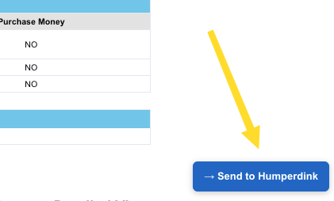
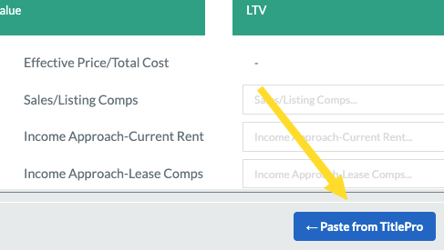
What it fills in
- Address, city, state, zip
- County
- APN
- Property type
- Building size
- Lot size, in square feet
- Purchase price
- Purchase date
- Year built
Bedrooms, bathrooms and units aren't filled in, because the New Property window has no place for them. The purchase price and date come from the most recent real sale on the report, so gifts, transfers between family members and foreclosures are skipped.
Good to know
- It holds one report at a time. Sending a second report replaces the first, so send the one you want right before you paste.
- You don't need to keep the TitlePro tab open. It remembers the last report you sent.
- Import Failed usually means you haven't sent a report from TitlePro yet. No data found in TitlePro means the TitlePro page isn't a property report.
New Loan on Loan Activity
Adds a New Loan button to the sidebar on Humperdink's Loan Activity page, so you can start a loan without opening one first. It opens Humperdink's own New Loan window.
How to use
- Go to the Loan Activity page in Humperdink.
- Click New Loan in the left sidebar. Humperdink's usual New Loan window opens.
-
Fill it in and click Create, the same as you would from inside a loan.
- With Open in new tab ticked, the new loan opens in a new tab and the Loan Activity list refreshes.
- With it unticked, this tab goes straight to the new loan.
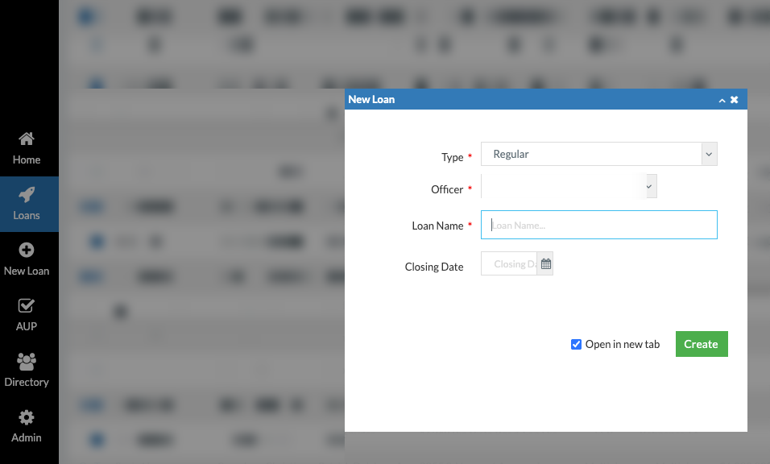
Cancel, the X or Esc closes the window without creating anything.
Standard Docs
Adds a Standard Docs button beside Loan Docs on a loan. One click makes the five standard loan docs: Agreement, EFT, Note (non-revolver), TD and Instructions.
How to use
- Open a loan in Humperdink and click Standard Docs, next to Loan Docs.
-
The first time, it asks where the docs should go:
- Download to this computer puts the Word files in your Downloads folder.
- Create in Humperdink saves them to the loan's documents.
- It makes the Agreement, EFT, Note (non-revolver), TD and Instructions in one go.
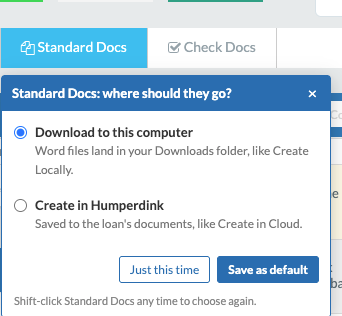
Saved a default and want to change it? Hold Shift while you click Standard Docs and it asks again.
Loan Docs Checker
Adds a Check Docs button beside Loan Docs on a loan. It checks the loan docs dates and the spelled-out amount and rates, outlines anything that's off, and can fix it for you.
How to use
- Open a loan in Humperdink and fill in the Closing Date, Loan Term, loan amount and rates as usual.
- Click Check Docs, next to Loan Docs. A panel lists every date and spelled-out field it checked, and anything that's off gets a red outline on the page.
- Click Fix on a row to put in the right value, or click a field's name to jump to it.
- Save the loan as usual. The checker doesn't save anything for you.
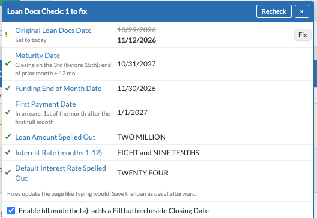
It checks the maturity date, first payment date, funding end of month date, extension dates, original loan docs date, and the spelled-out loan amount, interest rates, default rate and extension rates and fees. A yellow outline means it's worth a look but might be right as is, like an original loan docs date that isn't today.
Fill mode (beta)
- Tick Enable fill mode (beta) at the bottom of the Check Docs panel. It stays on in this browser until you untick it.
- A Fill button appears beside Closing Date. It stays grayed out until there's a closing date, because every other date is worked out from it.
- Click Fill to see everything it would change, old value crossed out and new value underneath. Untick anything you want left alone, then click Fill at the top of that box.
- Save the loan as usual.
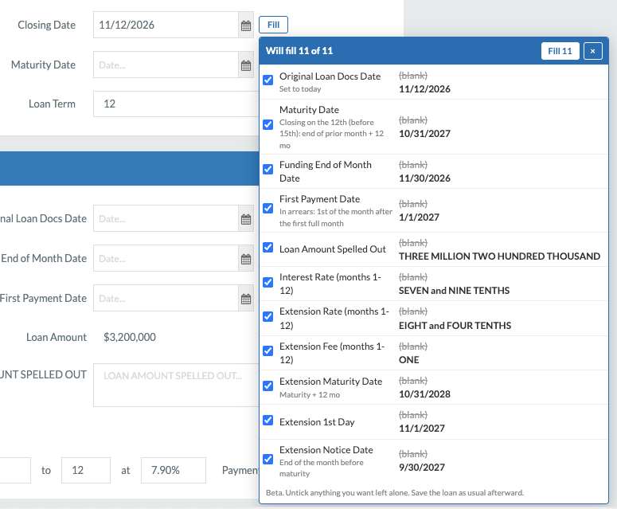
Comp Batching Tool for Redfin and Zillow
Puts a sale summary under the address on a Redfin or Zillow home, and collects comps into a set you can copy into Excel or print. Comps from both sites go into the same set, so you can mix them.
How to use
- Open a home on Redfin or Zillow. A summary box under the address shows the unit type, last sale price and date, square feet, lot size, beds and baths, year built and price per square foot.
- To keep it as a comp, tick Add to print set in the panel at the bottom right. Do the same on each comp you want. The set carries across tabs and across both sites.
- Type the subject property's square feet into Subject SF. The panel then shows the value based on the average comp.
-
When the set is ready:
- Copy table copies the comp table, ready to paste into Excel.
- Print set prints a summary table page plus one page per comp.
- Preview shows the printout on screen first.
- Print this prints just the home you're looking at.
- Click Clear to empty the set before the next deal.
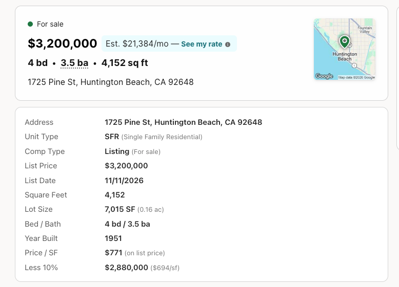
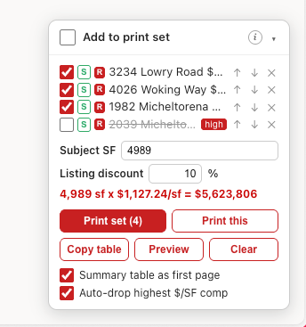
What Print set gives you
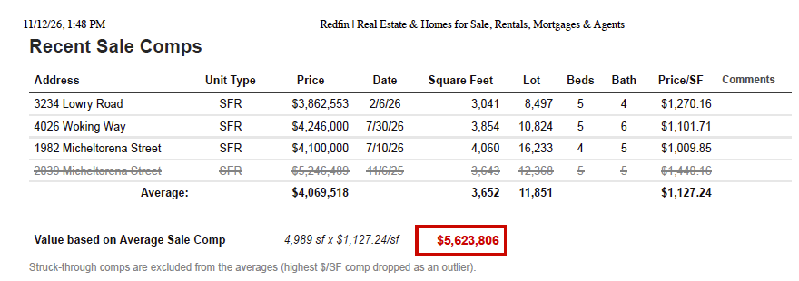
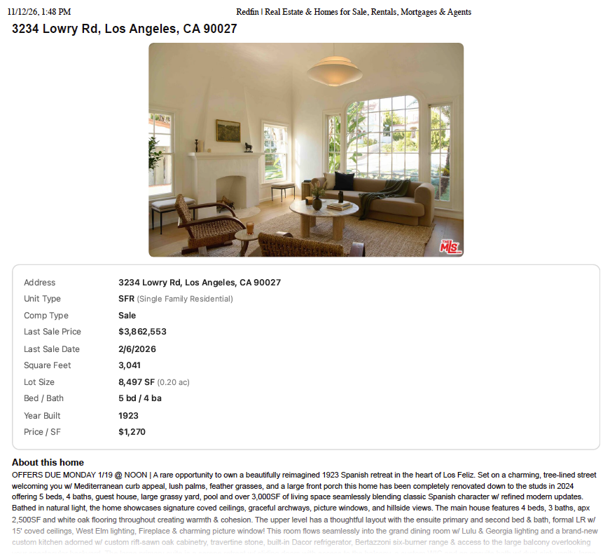
Good to know
- Untick a comp in the panel to leave it out of the averages without removing it.
- S or L next to a comp marks it as a sale or a listing. Click it to switch. Listings are counted at the list price less the Listing discount.
- With Auto-drop highest $/SF comp ticked and three or more comps, the priciest comp per square foot is left out of the averages and marked high. Tick it to keep it in.
- Ctrl+P on a home page prints the tidy one-page version.
Already added one of these by pasting it in? Install it from here anyway. It replaces your old copy, and this copy keeps itself up to date.
Export to HT used to be its own add-on, called Send to Hot Task. It's part of Hot Task Panel now. If the Violentmonkey dashboard lists both, remove Send to Hot Task.
The Comp Batching Tool used to be called Redfin Comp Printer. If the Violentmonkey dashboard lists both names, remove Redfin Comp Printer, or you'll get two summary boxes and two panels.
Check that it worked
- Open any loan in Humperdink, or reload one you already have open. An Export to HT button appears in the Loan Terms header, right after the LOI button, and a round Hot Task button sits in the bottom right corner.
- Open a property report in TitlePro. A blue Send to Humperdink button appears in the bottom right corner.
- Open any home on Redfin or Zillow. A sale summary box appears just below the address, price and stats, and an Add to print set panel sits in the bottom right corner.
If none of them show up, go back to Step 2. That switch is almost always the reason.
Updates
You don't need to do anything. Violentmonkey checks for new versions about once a day and installs them. To check right away, click the Violentmonkey icon, click the gear icon to open its dashboard, and click the Check for updates button (the circular arrow) above the list of scripts.